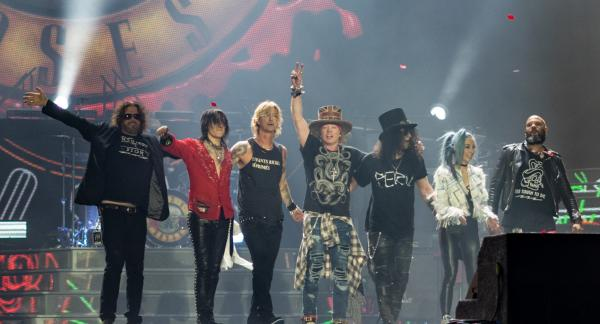
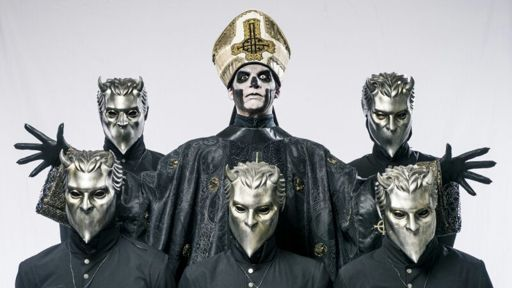
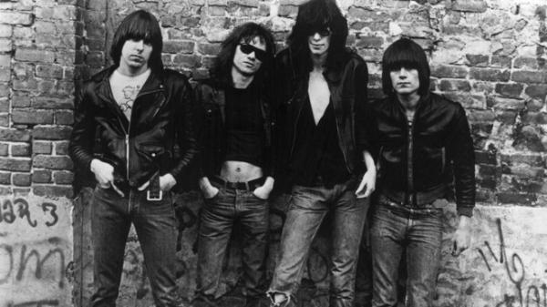
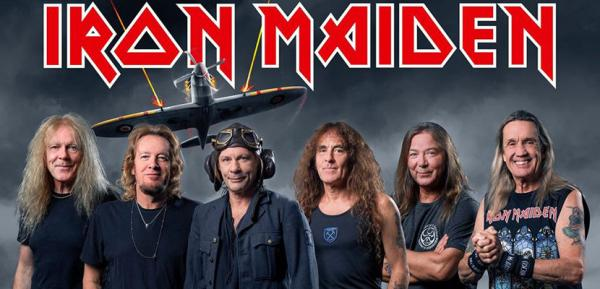

Guns N'Roses
Meu sonho pós pandemia é montar minha banda de rock que desejo montar a bastante tempo, já era díficil encontrar membros antes, imagine agora que estamos em pandemia.
Algumas bandas que procuro buscar inspiração:
Ghost BC
Ramones
Iron Maiden
